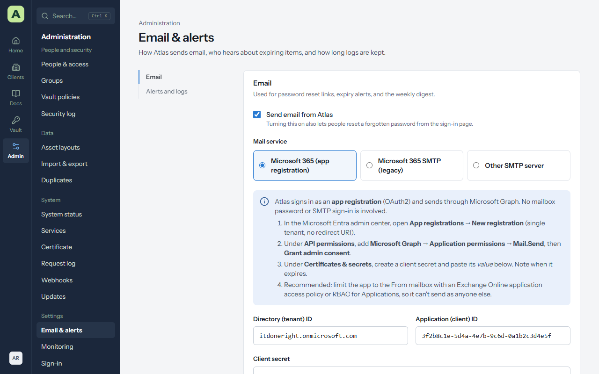
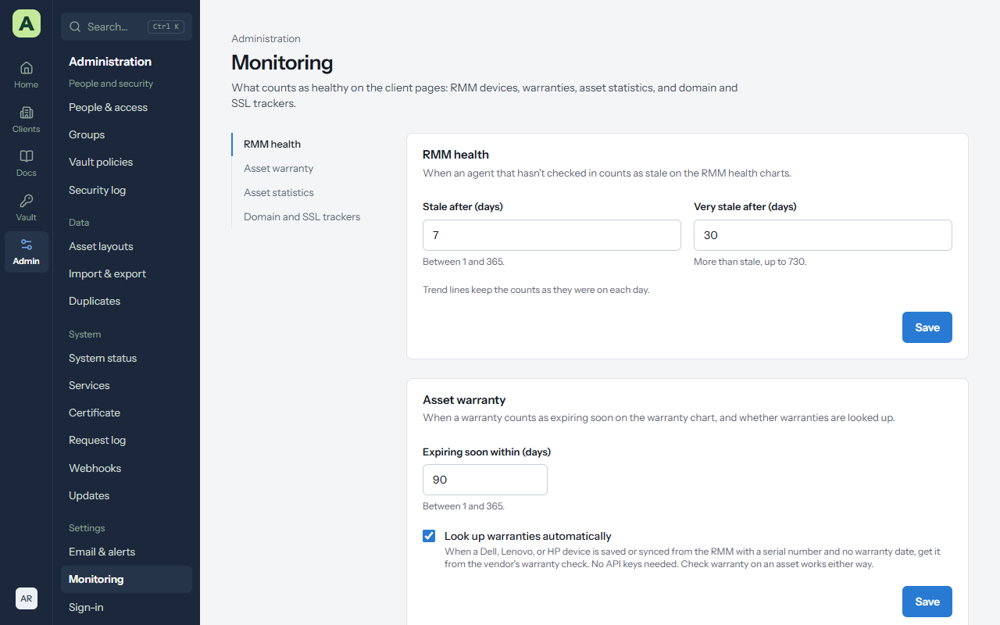
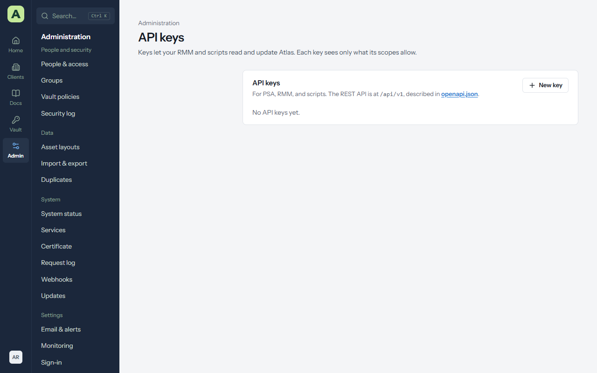
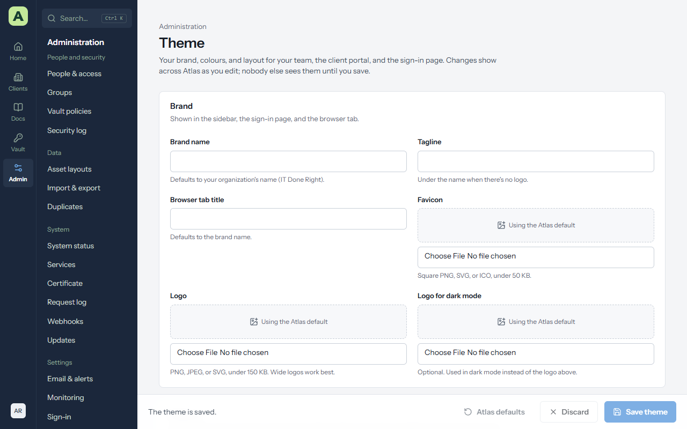
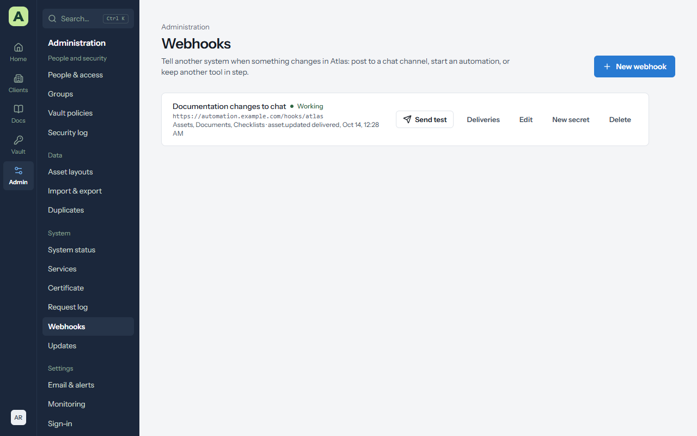

Chapter 11
Settings
Settings has its own group in the Admin menu, one page per job. This chapter goes through each one.
| Page | What you set there |
|---|---|
| Email & alerts | How Atlas sends email, when expiry alerts go out, and how long logs are kept. |
| Monitoring | What counts as healthy: RMM health, warranties, asset statistics, domain and SSL trackers. |
| Sign-in | Microsoft Entra ID and SAML single sign-on for staff. |
| API keys | Keys for your RMM and scripts. |
| Theme | Your logo, colours and the welcome message for client accounts. |
Webhooks is in the System group, and is covered at the end of this chapter.
Email & alerts


Atlas sends password reset links, expiry alerts and a Monday digest. Tick Send email from Atlas, then choose a mail service.
Microsoft 365 (app registration), recommended
Atlas signs in as an app registration and sends through Microsoft Graph. No mailbox password or SMTP sign-in is involved.
- In the Microsoft Entra admin center, open App registrations → New registration (single tenant, no redirect address).
- Under API permissions, add Microsoft Graph → Application permissions → Mail.Send, then Grant admin consent.
- Under Certificates & secrets, create a client secret and copy its value. Note when it expires.
- In Atlas, enter the Directory (tenant) ID, Application (client) ID and Client secret, then the From address and From name.
- Choose Save, then Send test.
Other mail services
- Microsoft 365 SMTP (legacy) fills in Office 365's server and port. Microsoft is retiring basic authentication for SMTP, so prefer the app registration.
- Other SMTP server takes an SMTP server, Port, Encryption, Username and Password.
Send test shows the mail server's own error if something is wrong.
Alerts and logs
- Email an alert this many days before something is due. For example, 30, 14 and 7 days.
- Send a weekly digest on Monday mornings, listing everything overdue or due in the coming weeks.
- Keep security and password logs for a number of years, or forever (the default).
People choose whether they receive alerts with Email me about expirations on their own account page.
Monitoring


| Section | Settings |
|---|---|
| RMM health | Stale after (days) and Very stale after (days): when an agent that hasn't checked in counts as stale. |
| Asset warranty | Expiring soon within (days), and Look up warranties automatically for Dell, Lenovo and HP. |
| Asset statistics | Which asset layouts count as servers, workstations and other devices. |
| Domain and SSL trackers | Check on a schedule (domains weekly, daily within 60 days of expiry; certificates daily), and Add SSL certificates for domains. |
Sign-in
Single sign-on with Microsoft Entra ID and SAML is described in People and access.
API keys


API keys let your RMM, PSA or scripts read and update Atlas through its REST API.
- Choose New key. Atlas asks for your password again.
-
Give it a Name, choose its scopes (
read,write, and optionallypasswords), and when it Expires (a year unless you choose otherwise). - Copy the key. It's shown once; Atlas keeps only a hash of it.
- The key acts as you, with your access, limited to its scopes.
- Keys can only reach documentation and vault endpoints, never accounts, people, settings, backups or logs.
- Every use is in the security log. Revoke keys you no longer use.
- The API is described at
/api/openapi.jsonon your Atlas.
Theme


Admin → Theme sets the Brand name, Tagline, Browser tab title, Favicon, a Logo (and one for dark mode), the Accent colour (and one for dark mode), and the Welcome message client accounts see on their dashboard. Text on the accent switches between light and dark to stay readable. Changes preview as you make them, and apply for everyone once you save.
Webhooks


Admin → Webhooks makes Atlas post a short message to an address of yours whenever something changes, so a chat channel, an automation or another tool can react.
-
Choose New webhook, give it a name and an
https://address, and tick the kinds of item it should hear about: clients, assets, documents, passwords, contacts, locations, checklists. - Copy the signing secret, shown once. The receiver uses it to check a message came from Atlas.
- Choose Send test to post a
ping.
A message names the event (such as asset.updated or password.rotated), who did it,
the client, and the item's name and address. It never carries the item's contents, and a password message
gives only the entry's name.
Delivery. Anything other than a 2xx answer within 10 seconds is a failure, tried again after 1 minute, 5 minutes, 30 minutes, 2 hours and 6 hours. After ten messages in a row have been given up on, the webhook is paused; fix the receiver and choose Resume. Deliveries shows the latest 50 and why any failed.
The signature format and headers are in the administrator guide.